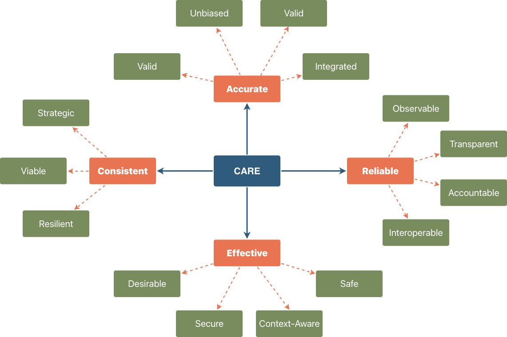

CARE — Shared Quality Standard¶
What is CARE?¶
CARE is the quality rubric that governs both dimensions of Trustably. It defines what good looks like — whether you are assessing an AI system being evaluated for organisational maturity, or a practitioner being assessed for individual fluency. It is not a checklist, a compliance requirement, or a scoring mechanism in isolation. It is a shared language: a principled, consistent standard that applies the same underlying quality criteria across both the institutional and individual dimensions of the framework.
Why CARE Matters
Most AI governance frameworks evaluate systems. Most AI fluency frameworks evaluate people. Trustably evaluates both — and CARE is what makes that possible without creating two disconnected vocabularies.
For organisations, CARE provides the rubric within every scoring cell of the 4E × FOCUS matrix. Rather than asking "did you complete this practice?" it asks "how well does this practice meet the quality standard?" The difference matters enormously in practice: an organisation can have a model registry (a practice) that is poorly governed, untested, and opaque — or one that is valid, observable, and accountable. CARE distinguishes between the two.
For practitioners, CARE provides the quality standard within every cell of the ANCHOR × ECHO matrix. It shifts the question from "do you use AI?" to "do you use AI in a way that is accurate, reliable, consistent, and effective?" That is a fundamentally more useful and more honest question.
This dual definition is deliberate and important. When an organisation asks whether its AI platform is Context-Aware, and when a practitioner asks whether they are Context-Aware in their AI work, they are being held to the same underlying quality — expressed differently, but measuring the same thing. This creates a unified quality language across the entire framework.

Traits and Sub-Capabilities¶
The Four Traits¶
Consistent Consistent means showing up the same way regardless of pressure, audience, or circumstance. For systems, this means strategic alignment, operational sustainability, and graceful degradation under failure. For practitioners, it means purposeful AI use, sustainable habits, and maintained engagement even under uncertainty. An AI system that works well in demos but drifts in production is not Consistent. A practitioner who applies rigorous judgement when supervised but shortcuts when not is not Consistent.
Accurate Accurate means grounding decisions and outputs in evidence rather than assumption. For systems, accuracy spans correctness of behaviour, freedom from discriminatory outputs, interpretability of outcomes, and coherence across components. For practitioners, accuracy means applying AI where it is genuinely fit for purpose, actively checking outputs for bias, being able to explain the AI's reasoning, and connecting outputs meaningfully to the broader context of the work. Accuracy is not just about whether the model is right — it is about whether the human and the system together are producing outputs that can be trusted.
Reliable Reliable means being dependable — people and processes can count on it. For systems, reliability requires observability, transparency about limitations, clear ownership of outcomes, and interoperability across the technical ecosystem. For practitioners, reliability means being visible in how AI is used, honest about AI's role in outputs, accountable for AI-assisted decisions regardless of their source, and effective as a collaborator when AI work spans teams or tools. A reliable practitioner does not hide behind "the AI said so." A reliable system does not fail silently.
Effective Effective means achieving outcomes that actually matter — without causing harm. For systems, effectiveness covers desirability (addressing real demand), security (protection against misuse), context-awareness (incorporating intent into decisions), and safety (not negatively impacting people or society). For practitioners, effectiveness means choosing AI use cases that create genuine value rather than performative ones, handling tools and data with discretion, reading the situation before reaching for AI, and knowing when human override is the right call. Effectiveness is the quality that most directly connects the framework to business and human outcomes — it is the final test of whether AI adoption is working.
The 15 Sub-Capabilities¶
| Trait | Sub-capability | Practitioner Focus (Individual Fluency) | System Focus (Institutional Maturity) |
|---|---|---|---|
| Consistent | Strategic | Aligns use to purposeful outcomes. | Aligned to organizational goals. |
| Viable | Builds habits that are sustainable. | Economically & operationally sustainable. | |
| Resilient | Maintains engagement under pressure. | Degrades gracefully under failure. | |
| Accurate | Valid | Applies AI where it is fit-for-purpose. | Behaves as intended in context. |
| Unbiased | Checks outputs for bias before acting. | Free from discriminatory outputs. | |
| Explainable | Can articulate the AI's rationale. | Outcomes are traceable & interpretable. | |
| Integrated | Connects outputs meaningfully. | Coherent accuracy end-to-end. | |
| Reliable | Observable | Knows how to check system health. | Continuous monitoring and instrumentation. |
| Transparent | Open about AI's role in outcomes. | Discloses AI use and limitations. | |
| Accountable | Takes responsibility for AI outcomes. | Clear roles, governance, and escalation. | |
| Interoperable | Collaborates across tools/teams. | Modular and composable across ecosystem. | |
| Effective | Desirable | Prioritizes value over performance. | Addresses real demand and user needs. |
| Secure | Handles tools with discretion. | Protected against unauthorized access. | |
| Context-Aware | Reads the situation before acting. | Incorporates intent into authorization. | |
| Safe | Knows when to apply human override. | Does not negatively impact systems/society. |
How CARE Is Applied¶
CARE operates as the quality rubric within every scoring cell of both Trustably models. It is applied descriptively rather than as a separate scoring axis — meaning it defines what each level of maturity or fluency looks like in terms of quality, not just what activities have been completed.
In the Institutional Maturity Model, each cell in the 4E × FOCUS matrix is assessed against the relevant CARE sub-capabilities. A cell at the Explore stage for Observability, assessed against the Observable sub-capability, might be characterised as: "No defined metrics or logging. System behaviour is invisible." The same cell at Embrace might be: "Full observability coverage across all AI assets. All signals and thresholds actively monitored with automated response." The CARE sub-capability provides the quality language; the 4E stage provides the progression context.
In the Individual Fluency Model, each cell in the ANCHOR × ECHO matrix is assessed against CARE sub-capabilities using the practitioner-facing definitions. A practitioner assessed on the Habits component of ANCHOR, scored against the Consistent quality, would be evaluated on whether their AI practice is Strategic (purposeful), Viable (sustainable), and Resilient (maintained under pressure) — not just whether they use AI regularly.
CARE does not change between the two models. The sub-capability definitions are fixed. What changes is the lens through which they are applied — system or practitioner — and the context provided by the scoring matrix they sit within. This consistency is what allows Trustably to produce a gap diagnostic between institutional maturity and individual fluency that is genuinely comparable: both scores are measured against the same underlying standard.
| Capability | Sub-capability | Explore (1–2) | Experiment (3–5) | Enable (6–8) | Embrace (9–10) |
|---|---|---|---|---|---|
| C — Consistent | Strategic | No strategy | Pilot-aligned | Org-aligned / KPIs | Self-evolving |
| C — Consistent | Viable | Unfunded | Pilot budget | Centralized Office | Self-optimizing |
| C — Consistent | Resilient | Fragile | Change-aware | NIST/ISO Aligned | Self-healing |
| A — Accurate | Valid | Vague | Terms defined | Framework enforced | Audit-validated |
| A — Accurate | Unbiased | Ignored | Ethics principles | Mandatory audits | Design-embedded |
| A — Accurate | Explainable | Opaque | Manual docs | Policy Registry | Auto-auditable |
| A — Accurate | Integrated | Siloed | Mapped gates | SDLC-embedded | Unified Mesh |
| R — Reliable | Observable | Blind | Manual Inventory | Live AI Registry | Predictive |
| R — Reliable | Transparent | Secretive | Internal Disclosure | Automated Disclosure | Radical/Open |
| R — Reliable | Accountable | Diffuse | Project-owned | Formal RACI | Policy-enforced |
| R — Reliable | Interoperable | Incompatible | Converging | Standardized | Global/Open |
| E — Effective | Desirable | "No" Dept | Self-assessment | Business Enabler | Frictionless |
| E — Effective | Secure | None | PIAs initiated | Zero-Trust Enforced | Adaptive |
| E — Effective | Context-Aware | Rigid | Risk-tiered | Profile-calibrated | Dynamic |
| E — Effective | Safe | Reactive | Safety principles | Ops operational | Proactive |
| Capability | Sub-capability | Explore (1–2) | Experiment (3–5) | Enable (6–8) | Embrace (9–10) |
|---|---|---|---|---|---|
| C — Consistent | Strategic | No observability strategy | Scope tied to pilot risk | Aligned to org risk tolerance | Dynamically updated with business objectives |
| C — Consistent | Viable | No sustainability consideration | Cost efficiency emerging | Auto-scaling, cost optimised | Self-optimising |
| C — Consistent | Resilient | No baseline | Baselines defined, stress testing initiated | Systematic testing, auto-scale deployed | Fully resilient, self-healing |
| A — Accurate | Valid | No validation | Data quality identified, testing strategies defined | Comprehensive validation enforced, drift detection live | Continuous automated validation |
| A — Accurate | Unbiased | No bias monitoring | Initial fairness methods identified | Continuous bias detection operational | Fully automated, feeds governance |
| A — Accurate | Explainable | No structured logging | Basic logging live | Structured, auditable, reproducible | Fully traceable, auto-reported |
| A — Accurate | Integrated | Fragmented | Partial lineage tracking | Full layer coverage, end-to-end lineage | Single coherent view across all systems |
| A — Accurate | Observable | No metrics or logging | Metrics and thresholds defined | Comprehensive live instrumentation | Full coverage including agentic, automated response |
| R — Reliable | Transparent | No reporting | Initial policies and documentation | Routine stakeholder communication | Automated, proactive disclosure |
| R — Reliable | Accountable | — | — | — | — |
| R — Reliable | Interoperable | Fragmented tools | Converging tool choices | Standardised, integrated | Fully interoperable across ecosystem |
| E — Effective | Desirable | Data not acted upon | Measurement tied to use case goals | Outputs inform decisions | Drives automated operational outcomes |
| E — Effective | Secure | No security consideration | Security risks measured in pilots | Formally measured, monitoring data protected | Automated threat detection, hardened infrastructure |
| E — Effective | Context-Aware | Generic monitoring | Risk-profile calibrated per pilot | Fully context-sensitive | Dynamically adaptive |
| E — Effective | Safe | No unsafe output monitoring | Basic guardrails in place | Automated harmful output detection | Proactive, pre-impact detection with human override |
| Capability | Sub-capability | Explore (1–2) | Experiment (3–5) | Enable (6–8) | Embrace (9–10) |
|---|---|---|---|---|---|
| C — Consistent | Strategic | Patchy awareness | Champion-led | Applied AI Identity | Core Pillar |
| C — Consistent | Viable | Ad-hoc learning | Lunch & Learns | Formal Literacy Budget | Peer-to-Peer |
| C — Consistent | Resilient | High fear | Fail-fast (Pilots) | Psych. Safety | Anti-fragile |
| A — Accurate | Valid | Blind trust | Verification basics | ECHO Habits | Critical Inquiry |
| A — Accurate | Unbiased | Denial | Curiosity | Adversarial Mindset | Design Equity |
| A — Accurate | Explainable | Magic Box | Mechanics-aware | Rationale-driven | Reasoning-first |
| A — Accurate | Integrated | Tool-siloed | Shared language | Cross-functional | Unified Process |
| R — Reliable | Observable | Closed | Periodic updates | Radical Sharing | Open-Source |
| R — Reliable | Transparent | Masked AI use | Encouraged | Disclosure-default | Radical Honesty |
| R — Reliable | Accountable | Diffuse | Project-owned | ANCHOR Habits | Sovereign |
| R — Reliable | Interoperable | Clashing metaphors | Common terms | Shared Taxonomy | Universal |
| E — Effective | Desirable | Fear/Threat | Tool-curiosity | Co-pilot mindset | Fulfilling/Essential |
| E — Effective | Secure | Leaky | List-checked | Human Firewall | Instinctive |
| E — Effective | Context-Aware | Generic use | Task-selection | Risk-calibrated | Dynamic |
| E — Effective | Safe | Ignored | Check-box | Safety as Value | Moral Imperative |
| Capability | Sub-capability | Explore (1–2) | Experiment (3–5) | Enable (6–8) | Embrace (9–10) |
|---|---|---|---|---|---|
| C — Consistent | Strategic | No strategy | Pilot-aligned | Org-aligned | Self-evolving |
| C — Consistent | Viable | Untracked cost | Manual tracking | FinOps active | Self-optimising |
| C — Consistent | Resilient | Manual/Fragile | Basic CI/CD | High-Availability | Self-healing |
| A — Accurate | Valid | Ad-hoc | Pilot-testing | Automated gates | Supply-chain valid |
| A — Accurate | Unbiased | No tools | Manual checks | DataOps gates | Design-embedded |
| A — Accurate | Explainable | Black box | Partial lineage | Full traceability | Auto-auditable |
| A — Accurate | Integrated | Siloed | Emerging patterns | Unified Platform | Composable Mesh |
| R — Reliable | Observable | Invisible | Basic Logging | MLOps Telemetry | Predictive |
| R — Reliable | Transparent | Opaque | Team-shared | Org-wide Dashboards | Radical/Open |
| R — Reliable | Accountable | No ownership | Project-owned | Platform SLOs | Policy-enforced |
| R — Reliable | Interoperable | Locked-in | Basic caching | Modular/Open | Zero-friction |
| E — Effective | Desirable | High friction | Template-based | Self-service | Frictionless |
| E — Effective | Secure | Loose | Basic SSO/RBAC | Zero-trust/DASF | Adaptive |
| E — Effective | Context-Aware | Generic | Intent-based | Risk-calibrated | Dynamically Adaptive |
| E — Effective | Safe | No controls | Kill-switches | Guardrails live | Proactive/Inherent |
| Capability | Sub-capability | Explore (1–2) | Experiment (3–5) | Enable (6–8) | Embrace (9–10) |
|---|---|---|---|---|---|
| C — Consistent | Strategic | Reactive | Pilot-level | NIST/DASF Aligned | Competitive Edge |
| C — Consistent | Viable | Unfunded | Manual reviews | Scalable SecOps | Self-optimizing |
| C — Consistent | Resilient | Fragile | Basic IR | AI-specific IR | Self-isolating |
| A — Accurate | Valid | Untested | Manual tests | Signed Artifacts | Live Red-Teaming |
| A — Accurate | Unbiased | No monitoring | Human-led | Quantitative checks | AI-driven fairness |
| A — Accurate | Explainable | Silent blocks | Manual logs | Policy-traceable | Auto-rationale |
| A — Accurate | Integrated | Siloed | SIEM/SOAR integration | Secure-by-design | Security Mesh |
| R — Reliable | Observable | Blind | Basic logs | Real-time telemetry | Predictive |
| R — Reliable | Transparent | Opaque | Internal docs | Live Dashboards | Radical/Open |
| R — Reliable | Accountable | No owner | Project-owned | Formal Auth | Policy-enforced |
| R — Reliable | Interoperable | Locked-in | Converging patterns | Multi-model support | Zero-friction |
| E — Effective | Desirable | High friction | Template-based | Self-service | Invisible/Frictionless |
| E — Effective | Secure | None | SSO/RBAC | Zero-Trust / DASF | Active Defense |
| E — Effective | Context-Aware | Generic | Risk-based | Tier-calibrated | Dynamic Trust |
| E — Effective | Safe | No controls | HITL / Filters | Guardrails live | Proactive/Preventative |
CARE and External Frameworks¶
CARE and External Frameworks
CARE draws on and is consistent with quality principles found across the major AI governance frameworks Trustably is grounded in. The Accurate quality maps directly to NIST AI RMF's MAP and MEASURE functions, particularly around bias, validity, and explainability. The Reliable quality aligns with DASF's observability and transparency controls across the AI security stack. The Effective quality incorporates the safety and security posture requirements of AWS Well-Architected AI Lens. The Consistent quality reflects the strategic alignment and operational sustainability principles that underpin all three frameworks.
Where CARE differs from these frameworks is in its dual application — extending each quality to the individual practitioner level, not just the system level. This extension is Trustably's original contribution: a quality standard that holds humans and systems to the same standard, in the same language, within the same assessment framework.